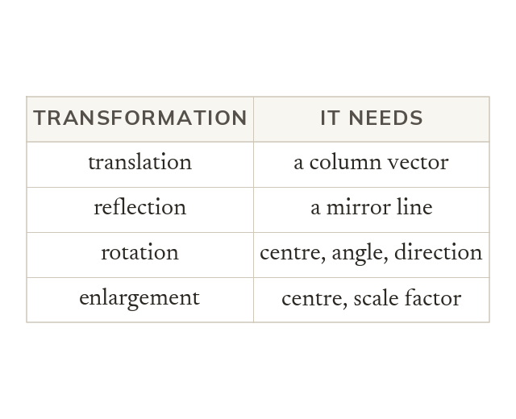

What each description needs
A translation needs a column vector, a reflection a mirror line. A rotation needs a centre, an angle and a direction. An enlargement needs a centre and a scale factor.
A translation needs a column vector, and a reflection needs its mirror line. A rotation needs a centre, an angle and a direction; an enlargement needs a centre and a scale factor.